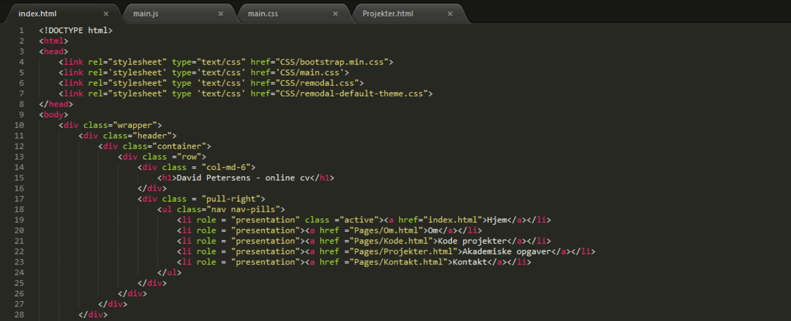
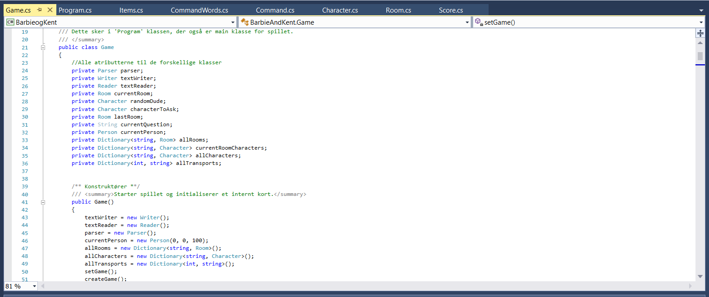
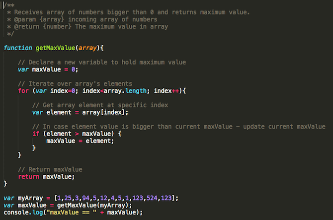

David Petersens - online cv

Jeg søger lige nu job som enten front-end eller back-end udvikler i Aarhus omegn
Mit navn er David Petersen og jeg blev her i sommers færdiguddanet cand.it'er i IT- Kommunikation og Organisation fra Aarhus Universitet.
Denne hjemmeside er et eksempel på noget af det HTML/CSS jeg har kodet, hvor Bootstrap frameworket også bliver brugt. Du kan enten se dokumentationen i browseren eller på kode siden, hvor der også eksempler på projekter jeg har lavet i javascript og c#.
Hvis du vil vide lidt mere om mig, kan du gå ind på om siden hvor der vil være en mere uddybende beskrivelse af hvem jeg er og hvad jeg kan tilbyde en kommende arbejdsgiver. På denne hjemmeside er der også en mulighed for at se på mine akademiske opgaver fra universitetet.Føl dig fri til at kigge på det hele, og hvis der er noget af det der vækker interesse, kan du kontakte mig dabp1@hotmail.com eller skrive en kontakt formular her.
Vh. David Alexander Bjerrum Petersen
Kodeprojekter
HTML, CSS, Bootstrap
Denne hjemmeside er lavet som et html projekt, med hjælp af bootstrap3 grids og CSS, føl dig fri til at kigge på kildekoden i din browser
C#
Dette projekt er et eksamensprojekt jeg har lavet på Aarhus Universitet.
Projektet er et adventurespil hvor man er på bytur i Aarhus og skal finde frem til en bestemt bar
Jeg har stået for alt koden og strukturen, mens resten af min gruppe stod for historien
I spillet er der både karakterer, items, inventar, specielle events, et score system og muligheden for at gemme og hente sit spil. Spillet i sig selv er ikke super interessant, men viser hvilke ting jeg kan lave i C#
I spillet er det forsøgt at programmerre ud fra høj cohesion i de enkelte klasser
Eksamensprojekt i C# (zip-fil), 204kb Javascript og jQuery
Jeg har den sidste måneds tid arbejdet med javascript, og der vil inden så længe, blive uploadet et produkt på denne her side der viser hvilke ting jeg kan lave i Javascript. Samtidig er der på denne her sidde blevet brugt jQuery til at tilføje ekstra funktionaliteter, som pop-up vinduer m.m.
Akademiske opgaver
Politisk og Økonomisk historie opgave
Titel - Juridiske personer i USA.
En større opgave der omhandler hvordan konceptet omkring virksomheder som juridiske entiteter, har medvirket til at skabe finanskrisen
Projektet blev afleveret d. 7/1-2013. Juridiske personer i USA - David Petersen
Bacheloropgave
Titel Softwarepatenter i USA.
Opgaven omhandler softwarepatenter i USA og hvordan deres konstruktion er med til at underminere innovation og start-ups.
Projektet blev afleveret d. 13/12-2013. Bacheloropgave - David Petersen
Speciale på IT- Kommunikation og Organisation.
Titel - Identitetsskabelse i incubatorer - Et case study af IT-incubatorers betydning for IT-entrepreneurers identitetsskabelse.
Specialet omhandler IT-entreprenenørers identitet som entreprenører, og hvordan en stærk identifikation med det at være entreprenører, har betydning for deres succes som entreprenører
Projektet blev afleveret d. 1/6-2016. Speciale - David Petersen